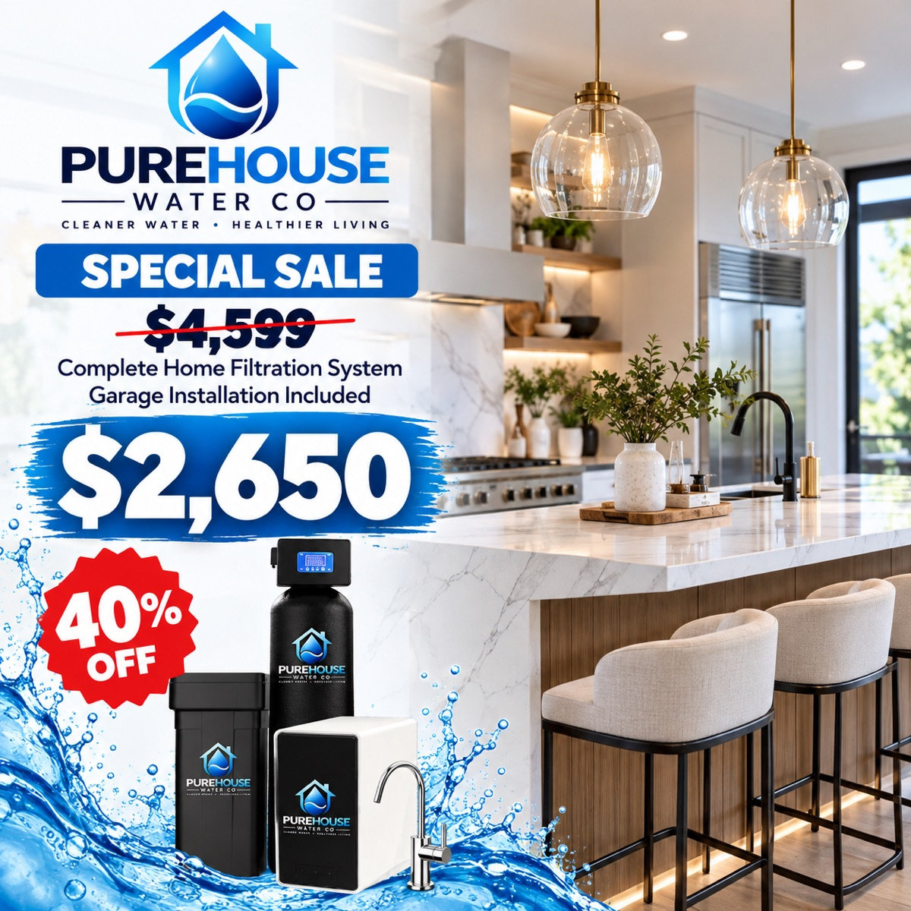

Reverse osmosis
Included with the Complete Home Filtration System
Our Complete Home package pairs a whole-home softener with an under-sink reverse osmosis system, so you get crisp, great-tasting water for drinking and cooking right at the kitchen sink.
$4,599$2,650Garage install included
- Crisp, clean, great-tasting water
- Compact under-sink unit
- Dedicated drinking water faucet
- Professional installation
Why switch from bottled water?
Save money
Filtered water at home costs pennies per gallon compared with buying bottles every week.
Less plastic
Cut hundreds of single-use bottles out of your household's trash every year.
Always on tap
No more running out or storing cases in the garage — it's there whenever you need it.
Find out what's really in your water.
Book a free, no-pressure in-home test and get a written recommendation the same day.